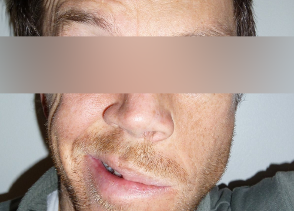

Paralisia Facial
Paralisia total de todos, ou alguns, músculos da expressão facial.
Subscreva nossa newsletter
A Paralisia Facial é um distúrbio (parésia) ou uma paralisia total de todos, ou alguns, músculos da expressão facial.

Últimos artigos
Vídeo Paralisia de Bell
2/01/2014
Paralisia Facial Bilateral
10/12/2013
Paralisia Facial Central
18/11/2013
Paralisia Facial - Ellen Miyuki
10/09/2013
Desconfie sempre se não conseguir sorrir
19/01/2013
Paralisia de Bell
6/11/2011
Tudo sobre Paralisia Facial
23/08/2011
Paralisia Facial
Paralisia
Definição
Incidência
Etiologia
Sinais e sintomas
Diagnóstico
Diagnóstico Diferencial
Prognóstico
Tratamento
Tratamento em Fisioterapia
Exercícios Faciais
Paralisia de Bell
Face
Ossos da Face
Pele da face
Músculos da Face
Enervação da Face
Vascularização da face
Nervos cranianos